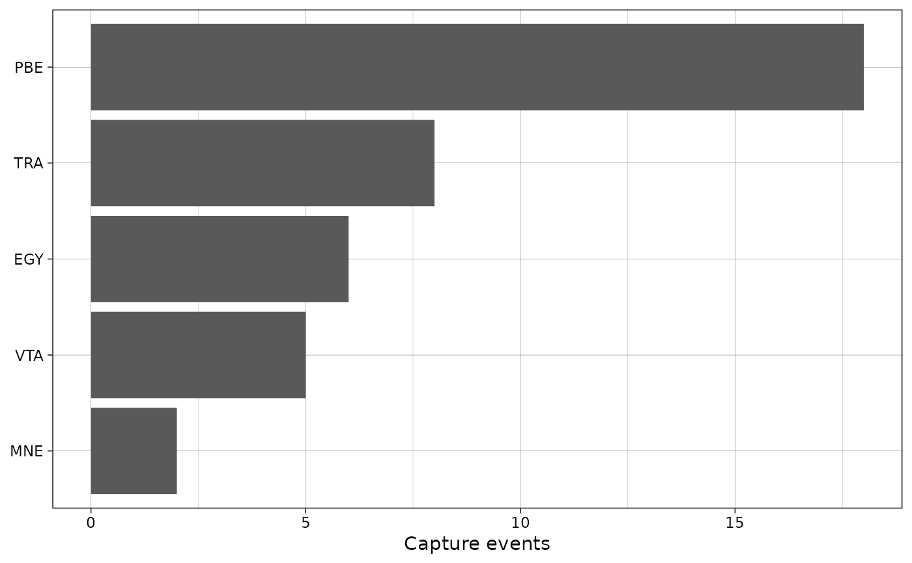

Plot species abundance as a barplot.
Usage
plot_species_bars(
df,
spp_col,
count_col = NULL,
obstype_col = NULL,
interactive = FALSE,
NA_count_placeholder = NA
)Arguments
- df
The dataframe
- spp_col
Name of the species column
- count_col
Name of the count column (optional). If missing, it will be assumed to be 1 for all observations.
- obstype_col
Name of the observation type column (optional). If it is present, the function will plot only the observations for which
obstype_colis "animal".- interactive
Logical; make the plot interactive with
ggiraph?- NA_count_placeholder
Value with which to replace NAs present in the column containing counts. If not specified, NA is the default and species which have NA in counts will have a NA count.
Value
A ggplot object representing horizontal bars of species
count. The x-axis is the observed number of individuals and the y-axis
are the different species.
Examples
data("recordTableSample", package = "camtrapR")
plot_species_bars(recordTableSample,
spp_col = "Species")
